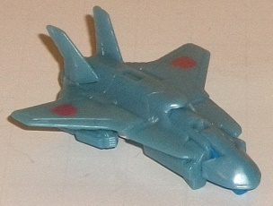
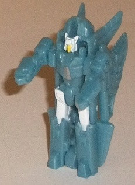
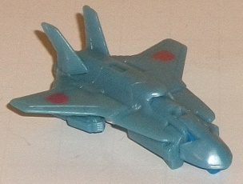
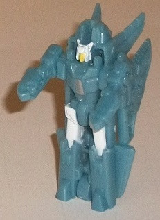
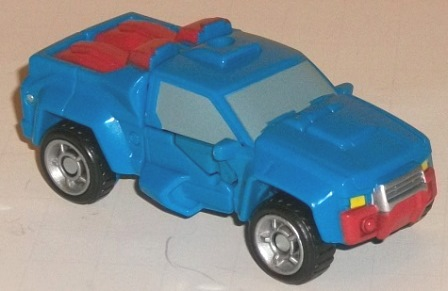
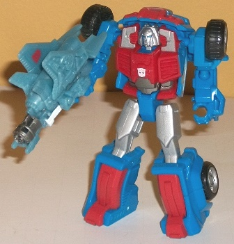

 
Difficulty of Transformations : Very Easy
Color Scheme : Pale light milky sky blue and some white, light yellow, silver, metallic gunmetal gray, and blue
Individual Rating : 5.7
Allegiance
: Autobot
Size
: Legends 2-pack
(NOTE: Because this set is composed of repaints,
this is not a full-blown review. This mainly covers any changes made to
the set and the color scheme, and merely compares it to the original versions
of these molds. For a review on Generations Legends Swerve w/ Flanker--
the original versions of these molds-- go
here
.)
 Autobot
Eclipse
Autobot
Eclipse


Difficulty of Transformations
: Very
Easy
Color Scheme
: Pale light milky sky
blue and some white, light yellow, silver, metallic gunmetal gray, and
blue
Individual Rating
: 5.7
By far Eclipse's main
color is a light pale milky blue, which serves as a pretty decent base
color, though personally removing the "milky" part of it would've made
it look a tad better, particularly in vehicle mode, methinks. This lighter
color also helps him contrast pretty well with his bigger pack-in partner
Gears. In vehicle mode, he's surpisingly plain, as there's no paint apps
there whatsoever except for the Autobot symbols on his wings. Thankfully
this changes for his other modes-- he's got a really nice shade of gunmetal
gray for his gun barrel in weapon mode, and in robot mode the white head
and upper legs contrast very well with the light blue-- better than you'd
think two light colors would. There's also just a tad of silver on the
chest (which doesn't contrast nearly as well, but it's certainly not bad)
and a touch of yellow on his faceplate in robot mode, which really works
against the white to distinguish some of his facial features more. His
last color is just used for the 5mm peg that other TFs can hold him by
in weapon mode-- it's a fairly standard color of blue, but it still looks
nice and both contrasts and complements with the light blue. All this said,
even in robot mode Eclipse looks a little plain, and could've used a few
more paint apps, particularly on his wings and/or arms.
No mold changes have
been made to Eclipse.
 Autobot
Gears
Autobot
Gears


Difficulty of Transformation
: Very
Easy
Color Scheme:
Blue, red, silver,
and some dull bluish gray, black, and yellow
Individual Rating
: 8.2
Gears was a pretty inevitable
repaint-- I mean, usually it's Swerve who is the redeco, not Gears! Regardless,
this version of Gears keeps his G1 color scheme pretty accurately, with
most of his coloration being rather primary shades of blue and red in vehicle
mode, with a pretty good amount of silver added to the mix in his robot
mode. The blue and red contrast against each other well, and the silver
serves as a nice, relatively light neutral color for them both to play
off. However, in my opinion, the color scheme sort of NEEDS the silver
to work well-- in vehicle mode, the silver isn't very visible, and the
straight red-and-blue don't look very realistic for a truck; particularly
the red truck bed/robot lower legs could've used some white or silver or
additional details or something. Still, even in vehicle mode Gears has
a decent number of accent colors. The dull bluish gray paint used for Gears'
windows is a pretty nice shade that both complements and contrasts against
the blue and serves as a pretty realistic window color to boot. There's
also the usual black tires, and a bit of silver on the wheel hubs and bumper
for some additional contrast. (I'm not fond of his red bumper, though--
what an odd color for a bumper.) There's also yellow paint used just for
the headlights-- I love it when colors are used just in one place like
that to help mix up the color scheme some more. In robot mode the silver
is used to great effect (which is good, as his other accent colors don't
show up here), spread rather evenly throughout his body. That said, having
his face be almost completely silver isn't quite accurate; there should
have been a bit of red there.
Gears has one mold change,
and that's a new headsculpt which-- of course-- is of his G1 head, updated
and modernized slightly with some really stellar mold detailing and a semi-grumpy
expression on his face. Like I said, it's great, except for all of it beyond
the eyes being painted silver.
The Gears & Eclipse 2-pack is, like the Swerve & Flanker 2-pack, one of the better of the "Thrilling 30th" Legends packs, to be sure. That said, though both are good molds for the size-- Gears in particular-- the color schemes for both Gears and Eclipse come in just slightly below Swerve and Flanker, as they don't pop quite as much. So if you're only going to pick up one, I'd recommend the Swerve & Flanker set just a tad more than I would these two.
Reviews by Beastbot